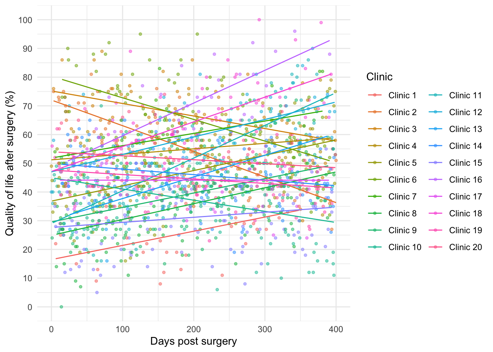
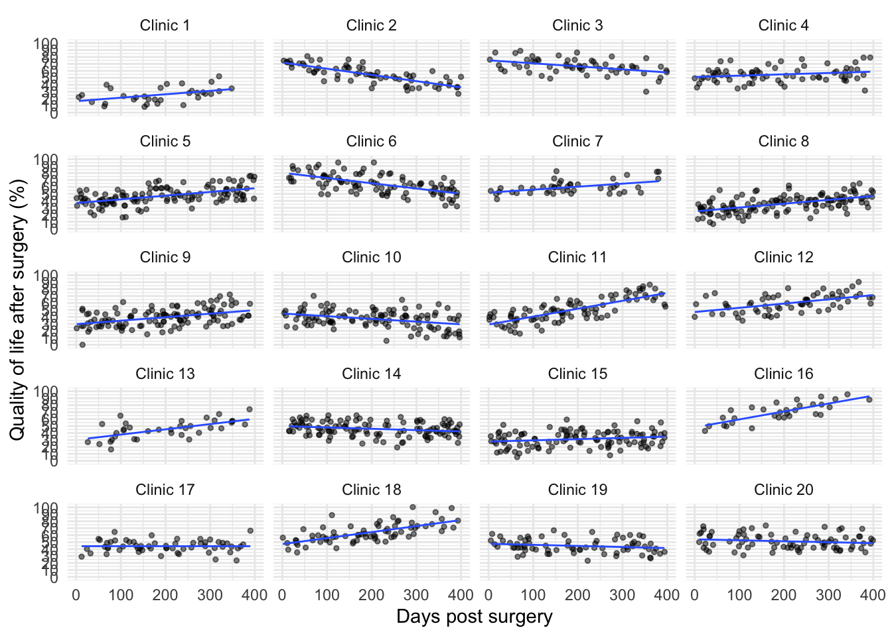
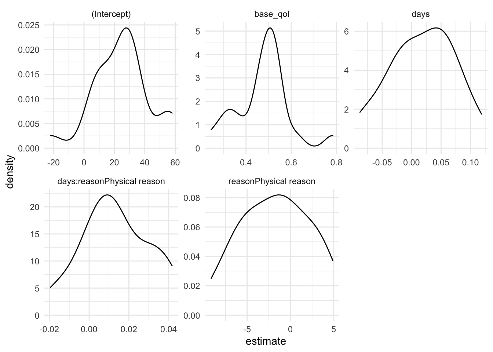

library(broom)
library(broom.mixed)
library(magrittr)
library(dplyr)
library(ggplot2)
library(lme4)
library(lmerTest)Chapter 14
Usage
This file contains code relevant to chapter 14 of Discovering Statistics Using R and RStudio by Andy Field. These files contain abridged sections from the book so there are some copyright considerations but I offer them under a Creative Commons Attribution-NonCommercial-NoDerivatives 4.0 International License.1
Load packages
Remember to load these packages:
library(broom)
library(broom.mixed)
library(magrittr)
library(dplyr)
library(ggplot2)
library(lme4)
library(lmerTest)Load the data
Load the data from the discover package:
cosmetic_tib <- discovr::cosmeticcosmetic_tib <- here::here("data-raw/csv_files/cosmetic.csv") |>
readr::read_csv() |>
dplyr::mutate(
clinic = forcats::as_factor(clinic),
reason = forcats::as_factor(reason)
)If you want to read the file from the CSV and you have set up your project folder as I suggest in Chapter 1, then the code you would use is:
cosmetic_tib <- here::here("data/cosmetic.csv") |>
readr::read_csv() |>
dplyr::mutate(
clinic = forcats::as_factor(clinic),
reason = forcats::as_factor(reason)
)This code reads the file in and converts the variables clinic and reason to factors. It’s a good idea to check that the levels of clinic are sequential from clinic 1 to clinic 21, and that reason has levels ordered change appearance and physical reason. Check the factor levels by executing:
levels(cosmetic_tib$clinic) [1] "Clinic 1" "Clinic 2" "Clinic 3" "Clinic 4" "Clinic 5" "Clinic 6"
[7] "Clinic 7" "Clinic 8" "Clinic 9" "Clinic 10" "Clinic 11" "Clinic 12"
[13] "Clinic 13" "Clinic 14" "Clinic 15" "Clinic 16" "Clinic 17" "Clinic 18"
[19] "Clinic 19" "Clinic 20"levels(cosmetic_tib$reason)[1] "Change appearance" "Physical reason" If they’re not in the correct order then:
cosmetic_tib <- cosmetic_tib |>
dplyr::mutate(
clinic = forcats::fct_relevel(clinic, paste("Clinic", seq(1, 20, 1))),
reason = forcats::fct_relevel(reason, "Change appearance")
)Plot the data
Create the plot
ggplot2::ggplot(cosmetic_tib, aes(days, post_qol, colour = clinic)) +
geom_point(alpha = 0.5, size = 1) +
geom_smooth(method = "lm", se = FALSE, size = 0.5) +
coord_cartesian(xlim = c(0, 400), ylim = c(0, 100)) +
scale_y_continuous(breaks = seq(0, 100, 10)) +
labs(x = "Days post surgery", y = "Quality of life after surgery (%)", colour = "Clinic") +
guides(colour=guide_legend(ncol=2)) +
theme_minimal()
ggplot2::ggplot(cosmetic_tib, aes(days, post_qol)) +
geom_point(position = position_jitter(width = 0.1, height = NULL), alpha = 0.5, size = 1) +
geom_smooth(method = "lm", se = FALSE, size = 0.5) +
coord_cartesian(xlim = c(0, 400), ylim = c(0, 100)) +
scale_y_continuous(breaks = seq(0, 100, 10)) +
labs(x = "Days post surgery", y = "Quality of life after surgery (%)", colour = "Clinic") +
facet_wrap(~ clinic, ncol = 4) +
theme_minimal()
Summary statistics
qol_sum <- cosmetic_tib |>
dplyr::group_by(clinic) |>
datawizard::describe_distribution(select = c("base_qol", "post_qol"), ci = 0.95)
qol_sum |>
dplyr::mutate(
Clinic = stringr::str_remove(.group, "clinic=")
) |>
dplyr::select(Clinic, Variable:n) |>
knitr::kable(caption = "Summary statistics for the surgery data",
digits = 2)| Clinic | Variable | Mean | SD | IQR | CI_low | CI_high | Min | Max | Skewness | Kurtosis | n |
|---|---|---|---|---|---|---|---|---|---|---|---|
| Clinic 1 | base_qol | 45.66 | 8.15 | 13.50 | 42.80 | 47.86 | 33 | 60 | 0.26 | -0.95 | 32 |
| Clinic 1 | post_qol | 25.66 | 11.04 | 15.75 | 22.27 | 29.51 | 8 | 52 | 0.41 | -0.35 | 32 |
| Clinic 2 | base_qol | 43.78 | 8.84 | 12.00 | 41.41 | 45.69 | 25 | 69 | 0.22 | 0.10 | 67 |
| Clinic 2 | post_qol | 54.85 | 13.27 | 20.00 | 51.65 | 57.29 | 27 | 81 | -0.05 | -0.88 | 67 |
| Clinic 3 | base_qol | 44.64 | 9.53 | 10.50 | 42.63 | 47.21 | 22 | 66 | 0.22 | 0.00 | 58 |
| Clinic 3 | post_qol | 66.47 | 11.00 | 14.50 | 63.14 | 68.86 | 30 | 89 | -0.41 | 1.14 | 58 |
| Clinic 4 | base_qol | 47.07 | 10.50 | 13.50 | 44.81 | 49.31 | 21 | 73 | -0.28 | 0.22 | 70 |
| Clinic 4 | post_qol | 54.70 | 10.63 | 12.25 | 51.83 | 57.28 | 32 | 79 | 0.37 | 0.02 | 70 |
| Clinic 5 | base_qol | 44.39 | 8.88 | 14.75 | 42.95 | 46.09 | 25 | 62 | -0.09 | -0.87 | 124 |
| Clinic 5 | post_qol | 47.05 | 12.26 | 16.00 | 44.89 | 48.87 | 16 | 76 | 0.11 | 0.12 | 124 |
| Clinic 6 | base_qol | 44.87 | 9.74 | 12.00 | 43.12 | 46.64 | 23 | 69 | 0.18 | 0.21 | 95 |
| Clinic 6 | post_qol | 64.26 | 14.14 | 21.00 | 61.61 | 67.14 | 32 | 95 | 0.07 | -0.43 | 95 |
| Clinic 7 | base_qol | 46.80 | 10.22 | 16.25 | 44.18 | 49.35 | 28 | 71 | -0.05 | -0.64 | 44 |
| Clinic 7 | post_qol | 59.68 | 9.45 | 11.50 | 56.96 | 63.13 | 42 | 83 | 0.94 | 0.58 | 44 |
| Clinic 8 | base_qol | 45.44 | 10.45 | 14.00 | 43.49 | 47.11 | 21 | 78 | 0.47 | 0.34 | 129 |
| Clinic 8 | post_qol | 35.61 | 11.91 | 16.00 | 33.68 | 37.55 | 7 | 65 | 0.05 | -0.27 | 129 |
| Clinic 9 | base_qol | 45.54 | 9.55 | 11.00 | 44.07 | 47.39 | 18 | 68 | 0.19 | 0.02 | 117 |
| Clinic 9 | post_qol | 39.32 | 12.67 | 16.50 | 37.04 | 41.12 | 0 | 72 | 0.13 | 0.10 | 117 |
| Clinic 10 | base_qol | 42.35 | 10.80 | 14.00 | 40.56 | 44.13 | 10 | 70 | -0.23 | 0.34 | 110 |
| Clinic 10 | post_qol | 36.94 | 12.60 | 15.50 | 35.26 | 39.23 | 6 | 70 | -0.20 | -0.05 | 110 |
| Clinic 11 | base_qol | 45.18 | 9.96 | 14.50 | 42.93 | 46.73 | 17 | 73 | -0.15 | 0.31 | 89 |
| Clinic 11 | post_qol | 50.01 | 16.63 | 26.00 | 46.49 | 52.71 | 16 | 86 | 0.21 | -0.58 | 89 |
| Clinic 12 | base_qol | 44.52 | 10.17 | 15.00 | 42.38 | 46.99 | 20 | 67 | -0.10 | -0.37 | 65 |
| Clinic 12 | post_qol | 60.00 | 12.40 | 19.00 | 57.21 | 63.39 | 35 | 90 | 0.05 | -0.57 | 65 |
| Clinic 13 | base_qol | 44.19 | 10.55 | 15.25 | 41.40 | 47.68 | 21 | 64 | -0.11 | -0.42 | 36 |
| Clinic 13 | post_qol | 45.31 | 13.05 | 19.25 | 41.28 | 50.66 | 16 | 74 | -0.08 | -0.24 | 36 |
| Clinic 14 | base_qol | 44.54 | 9.96 | 14.00 | 42.92 | 46.25 | 18 | 65 | -0.05 | -0.21 | 118 |
| Clinic 14 | post_qol | 45.92 | 10.03 | 15.25 | 44.18 | 47.37 | 19 | 65 | -0.16 | -0.49 | 118 |
| Clinic 15 | base_qol | 45.41 | 10.25 | 13.00 | 43.72 | 47.37 | 23 | 72 | 0.22 | -0.13 | 109 |
| Clinic 15 | post_qol | 31.17 | 11.18 | 15.00 | 29.28 | 33.32 | 5 | 59 | 0.03 | -0.38 | 109 |
| Clinic 16 | base_qol | 45.29 | 10.39 | 17.00 | 41.14 | 48.96 | 27 | 65 | 0.12 | -0.76 | 31 |
| Clinic 16 | post_qol | 69.90 | 13.98 | 19.00 | 65.45 | 75.16 | 43 | 96 | -0.08 | -0.71 | 31 |
| Clinic 17 | base_qol | 44.32 | 7.85 | 9.00 | 42.44 | 46.49 | 29 | 71 | 1.03 | 1.83 | 59 |
| Clinic 17 | post_qol | 44.12 | 8.54 | 10.00 | 42.12 | 45.86 | 24 | 66 | 0.08 | 0.52 | 59 |
| Clinic 18 | base_qol | 44.37 | 9.24 | 12.00 | 42.38 | 46.27 | 14 | 66 | -0.18 | 0.82 | 71 |
| Clinic 18 | post_qol | 63.46 | 13.59 | 20.00 | 60.48 | 66.41 | 35 | 100 | 0.55 | 0.26 | 71 |
| Clinic 19 | base_qol | 43.90 | 10.32 | 15.00 | 41.92 | 45.65 | 15 | 68 | -0.22 | 0.00 | 72 |
| Clinic 19 | post_qol | 44.58 | 9.91 | 13.00 | 42.54 | 46.66 | 23 | 67 | 0.20 | -0.53 | 72 |
| Clinic 20 | base_qol | 45.08 | 10.09 | 14.50 | 42.35 | 47.27 | 21 | 67 | 0.04 | -0.46 | 80 |
| Clinic 20 | post_qol | 51.15 | 10.69 | 16.00 | 49.02 | 54.01 | 31 | 74 | 0.33 | -0.77 | 80 |
Fixed effect fits
Fit the model to the pooled data
pooled_lm <- lm(post_qol ~ days*reason + base_qol, data = cosmetic_tib)
broom::tidy(pooled_lm, conf.int = TRUE) |>
knitr::kable(caption = "Parameter estimates for the pooled data model",
digits = 3)| term | estimate | std.error | statistic | p.value | conf.low | conf.high |
|---|---|---|---|---|---|---|
| (Intercept) | 24.755 | 2.058 | 12.030 | 0.000 | 20.719 | 28.791 |
| days | 0.009 | 0.004 | 2.068 | 0.039 | 0.000 | 0.017 |
| reasonPhysical reason | -2.479 | 1.616 | -1.534 | 0.125 | -5.649 | 0.691 |
| base_qol | 0.459 | 0.040 | 11.519 | 0.000 | 0.380 | 0.537 |
| days:reasonPhysical reason | 0.023 | 0.007 | 3.205 | 0.001 | 0.009 | 0.037 |
Fit the model across contexts
clinic_lms <- cosmetic_tib |>
dplyr::arrange(clinic) |>
dplyr::group_by(clinic) |>
tidyr::nest() |>
dplyr::mutate(
model = purrr::map(.x = data,
.f = \(clinic_tib) lm(post_qol ~ days*reason + base_qol, data = clinic_tib)),
coefs = purrr::map(model, tidy, conf.int = TRUE)
)
models <- clinic_lms |>
dplyr::select(-c(data, model)) |>
tidyr::unnest(coefs)models |>
ggplot(aes(estimate)) +
geom_density() +
facet_wrap(~term , scales = "free") +
theme_minimal()
Random effect models
Try to fit the model
cosmetic_mod <- lmerTest::lmer(post_qol ~ days*reason + base_qol + (days|clinic), data = cosmetic_tib)
allFit(cosmetic_mod)bobyqa : [OK]
Nelder_Mead : [OK]
nlminbwrap : [OK]
nmkbw : [OK]
optimx.L-BFGS-B : [OK]
nloptwrap.NLOPT_LN_NELDERMEAD : [OK]
nloptwrap.NLOPT_LN_BOBYQA : [OK]original model:
post_qol ~ days * reason + base_qol + (days | clinic)
data: cosmetic_tib
optimizers (7): bobyqa, Nelder_Mead, nlminbwrap, nmkbw, optimx.L-BFGS-B,nloptwrap.NLOPT_LN_N...
differences in negative log-likelihoods:
max= 0.304 ; std dev= 0.12 Rescale days
cosmetic_tib <- cosmetic_tib |>
dplyr::mutate(
months = days*12/365
)Standardizing variables
We don’t use this model, but if you wanted to fit the model to standardized variables then use this code.
cosmetic_tib <- cosmetic_tib |>
dplyr::mutate(across(.cols = where(is.double),
.fns = \(column) (column-mean(column, na.rm = T))/sd(column, na.rm = T),
.names = "z_{.col}")
)
cosmetic_modz <- lmerTest::lmer(z_post_qol ~ z_days*reason + z_base_qol + (z_days|clinic), data = cosmetic_tib)
broom.mixed::tidy(cosmetic_modz)Fit the model using months
cosmetic_mod <- lmerTest::lmer(post_qol ~ months*reason + base_qol + (months|clinic), data = cosmetic_tib, REML = T)
allFit(cosmetic_mod)bobyqa : [OK]
Nelder_Mead : [OK]
nlminbwrap : [OK]
nmkbw : [OK]
optimx.L-BFGS-B : [OK]
nloptwrap.NLOPT_LN_NELDERMEAD : [OK]
nloptwrap.NLOPT_LN_BOBYQA : [OK]original model:
post_qol ~ months * reason + base_qol + (months | clinic)
data: cosmetic_tib
optimizers (7): bobyqa, Nelder_Mead, nlminbwrap, nmkbw, optimx.L-BFGS-B,nloptwrap.NLOPT_LN_N...
differences in negative log-likelihoods:
max= 5.3e-07 ; std dev= 1.98e-07 Change the optimizer
cosmetic_bob <- lmerTest::lmer(
post_qol ~ months*reason + base_qol + (months|clinic),
data = cosmetic_tib,
control = lmerControl(optimizer="bobyqa")
)Use maximum likelihood estimation
cosmetic_ml <- lmerTest::lmer(
post_qol ~ months*reason + base_qol + (months|clinic),
data = cosmetic_tib,
REML = F
)Interpreting the model
anova(cosmetic_bob) |>
knitr::kable(caption = "Fixed effects for the final model",
digits = c(rep(2, 5), 3))| Sum Sq | Mean Sq | NumDF | DenDF | F value | Pr(>F) | |
|---|---|---|---|---|---|---|
| months | 275.41 | 275.41 | 1 | 19.03 | 3.21 | 0.089 |
| reason | 288.06 | 288.06 | 1 | 1535.47 | 3.36 | 0.067 |
| base_qol | 32785.53 | 32785.53 | 1 | 1534.92 | 382.66 | 0.000 |
| months:reason | 1014.54 | 1014.54 | 1 | 1535.12 | 11.84 | 0.001 |
options(knitr.kable.NA = '')
broom.mixed::tidy(cosmetic_bob, conf.int = T) |>
knitr::kable(caption = "Parameter estimates for the final model",
digits = c(rep(2, 7), 3, 2, 2))| effect | group | term | estimate | std.error | statistic | df | p.value | conf.low | conf.high |
|---|---|---|---|---|---|---|---|---|---|
| fixed | (Intercept) | 25.07 | 4.02 | 6.24 | 22.48 | 0.000 | 16.75 | 33.39 | |
| fixed | months | 0.48 | 0.40 | 1.22 | 19.62 | 0.239 | -0.35 | 1.31 | |
| fixed | reasonPhysical reason | -1.79 | 0.98 | -1.83 | 1535.47 | 0.067 | -3.71 | 0.12 | |
| fixed | base_qol | 0.47 | 0.02 | 19.56 | 1534.92 | 0.000 | 0.42 | 0.52 | |
| fixed | months:reasonPhysical reason | 0.45 | 0.13 | 3.44 | 1535.12 | 0.001 | 0.19 | 0.70 | |
| ran_pars | clinic | sd__(Intercept) | 17.05 | ||||||
| ran_pars | clinic | cor__(Intercept).months | -0.70 | ||||||
| ran_pars | clinic | sd__months | 1.73 | ||||||
| ran_pars | Residual | sd__Observation | 9.26 |
cosmetic_slopes <- modelbased::estimate_slopes(cosmetic_bob,
trend = "months",
at = "reason",
ci = 0.95)
cosmetic_slopes |>
knitr::kable(caption = "Change over time for different reasons for surgery",
digits = 3)| reason | Coefficient | SE | CI | CI_low | CI_high | t | df_error | p |
|---|---|---|---|---|---|---|---|---|
| Change appearance | 0.482 | 0.397 | 0.95 | -0.346 | 1.311 | 1.215 | 19.623 | 0.239 |
| Physical reason | 0.929 | 0.401 | 0.95 | 0.094 | 1.765 | 2.316 | 20.558 | 0.031 |
Some alternative ways to get the same simple slopes
#| eval: false
cosmetic_slopes <- interactions::sim_slopes(
cosmetic_bob,
pred = months,
modx = reason,
confint = TRUE
)
cosmetic_slopes <- emmeans::emtrends(cosmetic_bob, var = "months", spec = "reason")Plot the simple slopes
interactions::interact_plot(
cosmetic_bob,
pred = months,
modx = reason,
interval = TRUE,
x.label = "Months since surgery",
y.label = "Quality of life post-surgery (0-100)",
legend.main = "Reason for surgery"
) 
Footnotes
Basically you can use this material for teaching and non-profit activities but do not meddle with it or claim it as your own work.↩︎